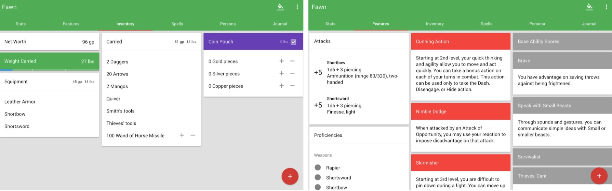
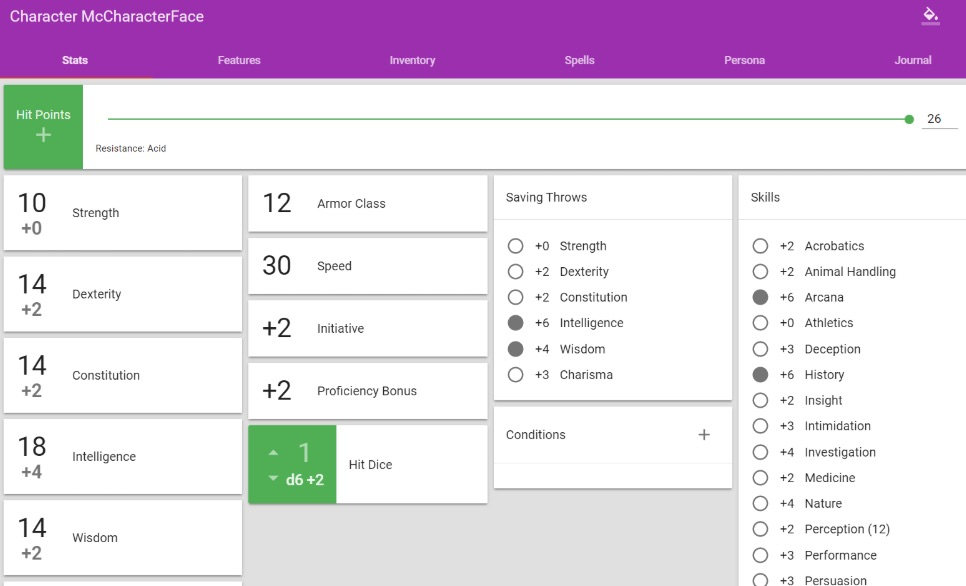
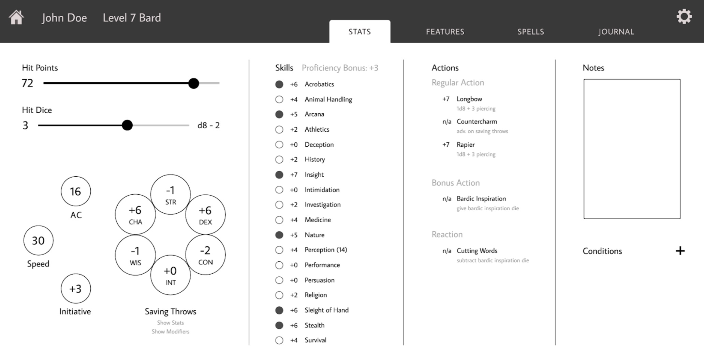
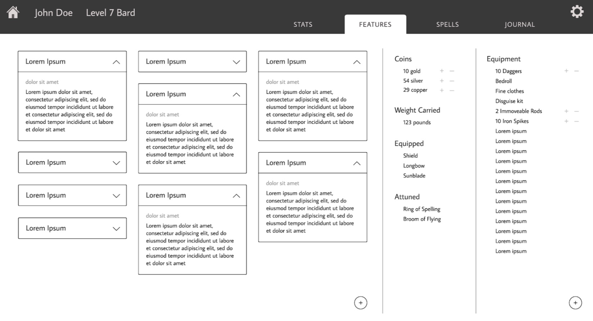
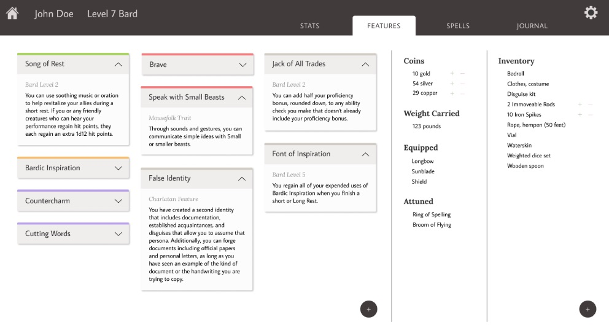
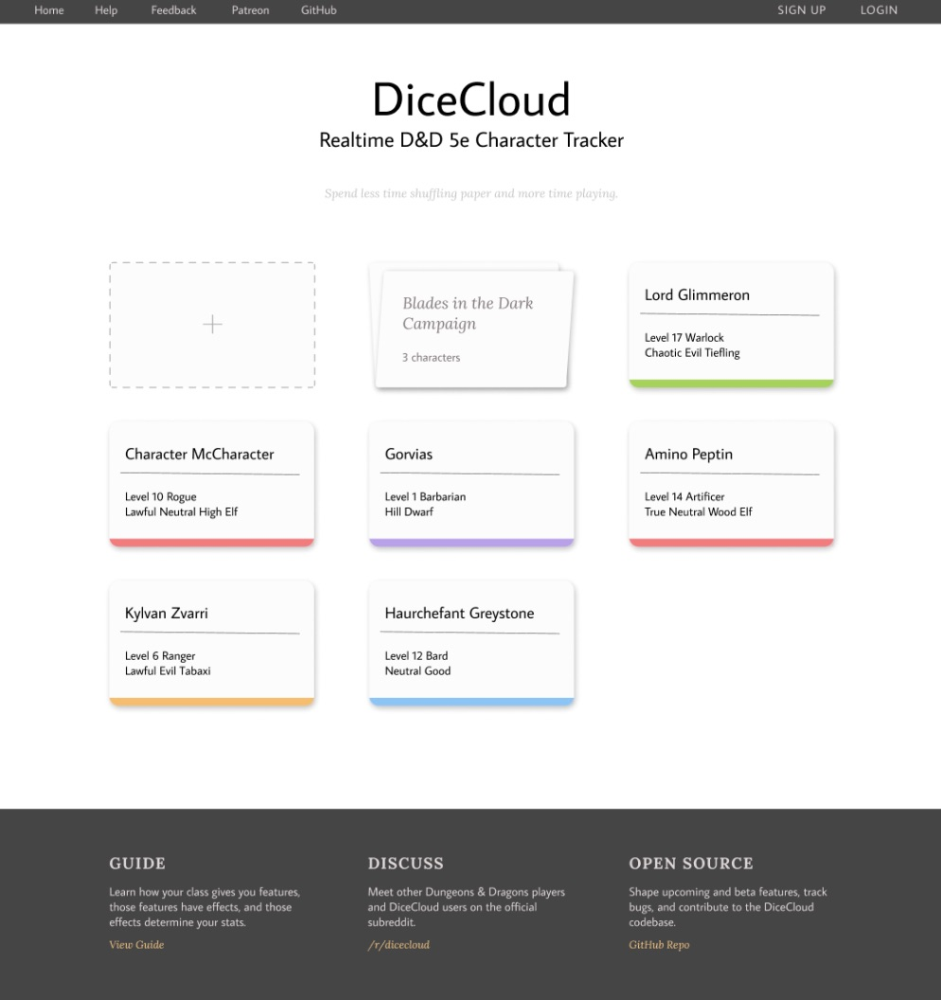

Dungeons & Dragons is a narrative roleplaying game with extremely complex mechanics, where each player has to maintain a detailed character sheet throughout their campaign. Modern players often turn to web-based interfaces to help them keep track of their character’s many statistics, features, items, and spells, and one such service is DiceCloud. This program allows users to create and manage characters, and takes care of many tedious calculations that are usually done by hand—which is fantastic in concept, but has a cluttered interface that makes it unintuitive to navigate.
As a huge fan of D&D, and also a user of DiceCloud, I teamed up with another developer in my campaign party to embark upon a quest to redesign it from the ground up.
DiceCloud's interface is mostly just a list of cards stacked on a page, and although there is some order to their placement, there exist few visual cues for users to guess where they might find a given number. This inefficient design, on top of inefficiently used whitespace, unnecessarily adds to the intensity of memorability and learnability required to use DiceCloud effectively.
Many of DiceCloud’s features and editing of certain elements are hidden beneath menus and clickable headings. For example, editing one’s class requires one to click the class name, and editing ability scores requires clicking “base ability scores” under features. It is not initially clear which elements are clickable.
In terms of learnability, DiceCloud is difficult to learn for new users. When you create a character, you are thrust onto the main screen with no indication as to where to begin. The Journal tab is where one begins to add properties such as race bonuses and classes. The Features tab is where one edits ability scores (strength, dexterity, etc). Many users do not initially realize that you can click many of the elements, such as the “Speed” box, to reference how their numbers are calculated. This stems from a lack of affordances in the design. Many core rules, such as adding the Constitution score to HP, are done automatically, and a user is not informed of this.
When a user becomes used to DiceCloud, managing characters while playing DnD becomes very efficient. A user can add formulas to certain elements, such as hit points (HP). These formulas allow one to level up quickly, instead of manually adding numbers in. If one is organized enough, the features page can be very easy to navigate. The spells tab is a great way to manage prepared spells and spell lists, when it is set up properly. However, DiceCloud is very expensive in terms of whitespace: the six ability modifiers unnecessarily take up ⅛ of the whole screen, and the Inventory screen is filled with cards that don’t need a whole card to themselves. It can be inefficient to require so much navigation and searching in the middle of a play session.
Because DiceCloud hides many features behind menus, much of character creation is difficult to do. One has to manually set aspects such as Hit Dice, Speed, and HP every time a new character is made. It is difficult to remember where to place these, and the program gives no guidance on this matter. Formulas and certain variables exist for different aspects of one’s character, such as an ability score or ability modifier, but the variables are hard to remember without referencing them (e.g. [strengthMod], case sensitive).
With our wireframe in place, we set out to fill in the blanks and visually redesign DiceCloud using Figma. We ultimately utilized a similar card system that capitalized on simplicity, efficiency, and clarity.
  Pictured above is our new stats screen, with more visual cues to help with user navigation, and to fit everything onto one (desktop) screen. We reorganized information to be more intuitive to find; instead of scattering numbers everywhere for the statistics page, we grouped related elements firmly together, such as the six base character statistics. These can now toggle between raw scores, ability modifiers, and saving throw modifiers, which are intensely related.
To the right is our new features screen, which can now collapse cards—something DiceCloud doesn't do! Overall, it just features more efficient use of screen real estate.
As we filled in our wireframes with high-fidelity elements, we also greatly reduced the aggressiveness of DiceCloud’s color-tagging system while maintaining its core functionality. You can see the direct comparison between one set of wireframe design to the visual redesign to the right. Overall, we improved the visual & informational hierarchy to more easily tell what properties a player has at all times. 
Outside of these redesigns, we also shuffled some functionality around and added three ideal features of our own. The first is a character builder: when a user creates a character, they will be taken to a character creation page to set the initial parameters such as race, class, and ability scores. This allows for much faster character creation, and autofills the requisite fields such a HP and proficiencies. In the original DiceCloud, the user would have to hunt for each of these fields individually in different places.
The second feature we thought would be tremendously helpful in interface efficiency is being able to search and filter for spells. This prevents a user from having to comb through the entire list to find a spell they need for a specific situation—they could search by concentration spells, or bonus action spells, or spells that last longer than one turn.
The last one sounds simple, but could actually be quite important—a quick, easy-to-reach notes field. The notes section where users can type whatever they want can easily replace many of the other complex mechanics that DiceCloud implemented (such as the number of death saving throws or exhaustion levels), which were distracting and difficult to remember how to add since they rarely come up during campaigns anyways. Players can jot those down as they come.